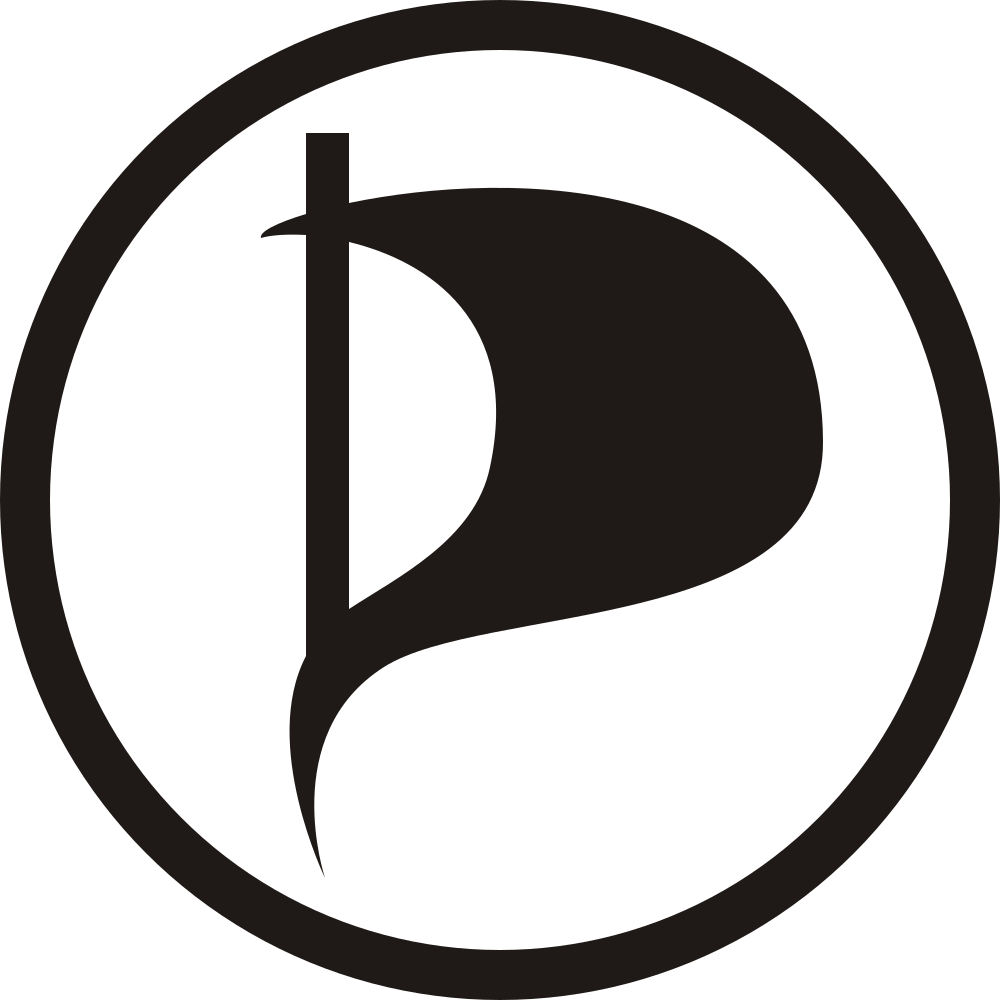

<ul>
<li><a href="logos/open-sf.svg"></a></li>
<li><a href="logos/twitter.svg"></a></li>
<li><a href="html5/html.svg"></a></li>
<li><a href="html5/html5.svg"></a></li>
<li><a href="wordpress/wordpress.svg"></a></li>
<li><a href="@voodootikigod/js.svg"></a></li>
<li><a href="Ghost in the Shell/laughing-man.svg"></a></li>
<li><a href="chrome/2011-logo.svg"></a></li>
<li><a href="chrome/logo.svg"></a></li>
<li><a href="google/google+.svg"></a></li>
<li><a href="hai/logo.svg"></a></li>
<li><a href="pp/PP-black-sail.svg"></a></li>
<li><a href="pp/PP-logo-dark.svg"></a></li>
<li><a href="pp/PP-logo-light.svg"></a></li>
</ul>
